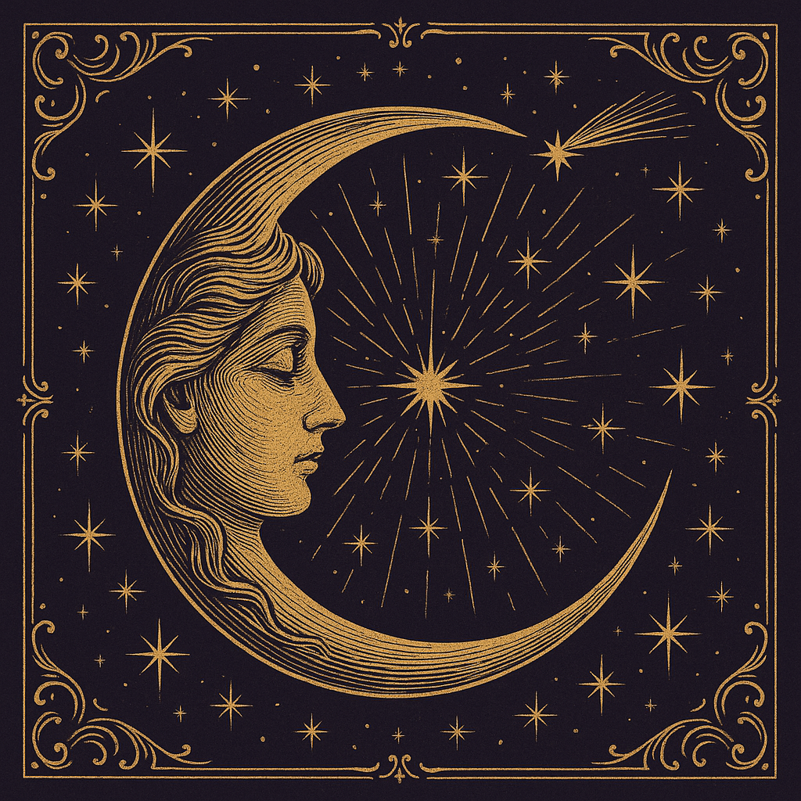

Star Chart — plain language
The Small Hours
Printed while the city dreams — six briefs gathered from the signal sky
Dustin Cole · AI side project · Built from sourced signals

A small side project where I use AI agents to keep a cleaner read on the things I already pay attention to: energy, practical AI, analytics, and work automation.
If you're interested in that same mix, follow along here. I'll keep adding the useful pieces, the weird experiments, and the parts that actually save time.
The night's collection is being fetched…
Star Chart — plain language